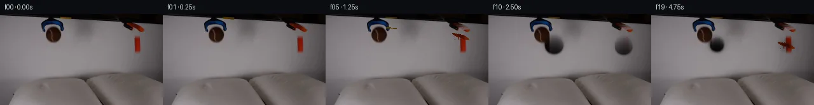

![首帧]()

Round 00
2026-11-04T16:55:45.441503+00:00像素候选变化代码 +317/−0inspection 更新
pixels d193b71c34325db2 · code ac1c5aeef86f47ab
查看本轮 generate.py 真实 diff
--- previous/generate.py
+++ current/generate.py
@@ -0,0 +1,317 @@
+#!/usr/bin/env python3
+"""generate.py — PixelWorld-Text case_0001: grabber tools release orange block & brown tennis ball onto pillows.
+
+Method: Object extraction via color+spatial masks; gravity-based translation; background inpainting
+via horizontal row interpolation; local pillow deformation on impact with Gaussian kernel.
+All pixel operations are local NumPy/PIL drawing — no external models or engines.
+"""
+
+import numpy as np
+from PIL import Image
+from pathlib import Path
+import sys, os
+
+# ── helpers from artifact_io ──────────────────────────────────────────────
+sys.path.insert(0, str(Path(__file__).parent))
+from artifact_io import save as artifact_save
+
+CASE_DIR = Path(__file__).parent
+TMP = CASE_DIR / ".tmp"
+TMP.mkdir(exist_ok=True)
+
+# ── load first frame ──────────────────────────────────────────────────────
+src = np.array(Image.open(CASE_DIR / "first_frame.png")).astype(np.uint8)
+H, W = 144, 256
+assert src.shape == (H, W, 3), f"Expected (144,256,3), got {src.shape}"
+
+# ══════════════════════════════════════════════════════════════════════════
+# OBJECT MASK DEFINITIONS
+# ══════════════════════════════════════════════════════════════════════════
+
+# Orange Block — left grabber tip. Color: strong orange (high R, medium G, tiny B).
+orange_mask = np.zeros((H, W), dtype=bool)
+for y in range(3, 10):
+ for x in range(93, 115):
+ r, g, b = src[y, x].astype(int)
+ if r > 80 and g > 30 and b < 30 and (r - g) > 10:
+ orange_mask[y, x] = True
+
+# Brown Tennis Ball — right grabber tip. Color: brown-red (R dominant, B small).
+brown_mask = np.zeros((H, W), dtype=bool)
+for y in range(12, 25):
+ for x in range(197, 230):
+ r, g, b = src[y, x].astype(int)
+ if r > 60 and r < 130 and (r - g) > 15 and (r - b) > 15 and b < 50 and g < 80:
+ brown_mask[y, x] = True
+
+# ── verify we have reasonable masks ───────────────────────────────────────
+no = int(orange_mask.sum())
+nb = int(brown_mask.sum())
+print(f"Orange block pixels: {no} Brown ball pixels: {nb}", flush=True)
+assert 20 <= no <= 80, f"Orange mask size {no} unexpected"
+assert 80 <= nb <= 250, f"Brown mask size {nb} unexpected"
+
+# ── compute object centres in source frame ────────────────────────────────
+oy, ox = np.where(orange_mask)
+orange_cx0 = ox.mean()
+orange_cy0 = oy.mean()
+by, bx = np.where(brown_mask)
+brown_cx0 = bx.mean()
+brown_cy0 = by.mean()
+print(f"Orange centre (src): ({orange_cx0:.1f}, {orange_cy0:.1f})", flush=True)
+print(f"Brown centre (src): ({brown_cx0:.1f}, {brown_cy0:.1f})", flush=True)
+
+# ══════════════════════════════════════════════════════════════════════════
+# BACKGROUND INPAINTING — fill object-shaped holes via row interpolation
+# ══════════════════════════════════════════════════════════════════════════
+
+def inpaint_hole(frame, mask):
+ """Fill True pixels in *mask* by horizontal linear interpolation
+ from nearest non-mask pixels in the same row."""
+ out = frame.copy()
+ hy, hx = np.where(mask)
+ if len(hy) == 0:
+ return out
+ for y in np.unique(hy):
+ row_mask = mask[y]
+ row_pixels = np.where(row_mask)[0]
+ # find runs
+ if len(row_pixels) == 0:
+ continue
+ breaks = np.where(np.diff(row_pixels) > 1)[0]
+ runs = []
+ start = 0
+ for b in breaks:
+ runs.append((row_pixels[start], row_pixels[b]))
+ start = b + 1
+ runs.append((row_pixels[start], row_pixels[-1]))
… diff truncated; 230 more lines …